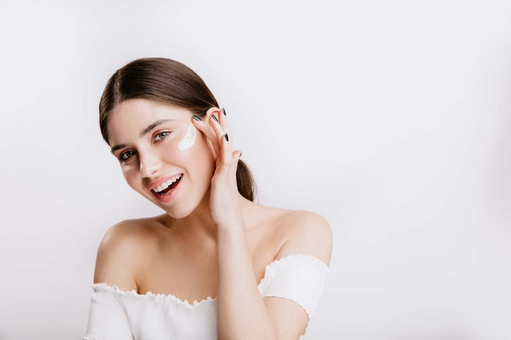
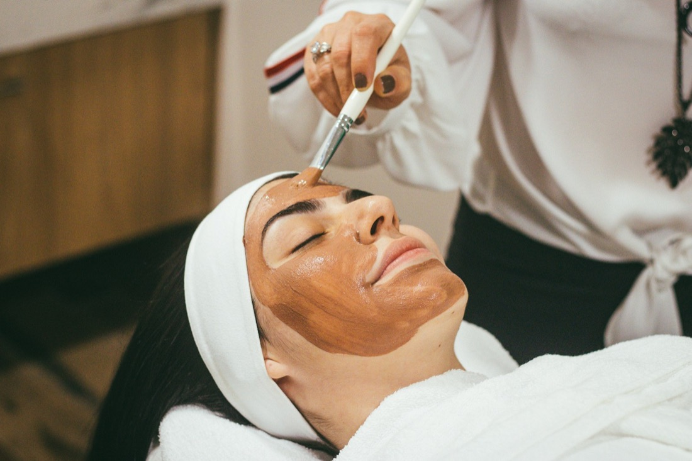
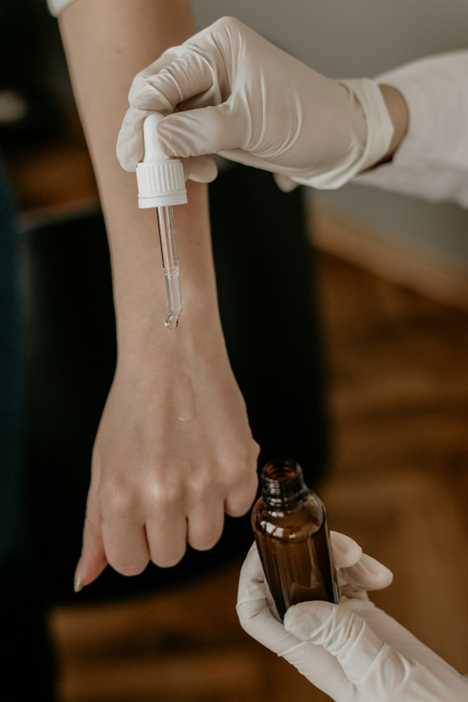
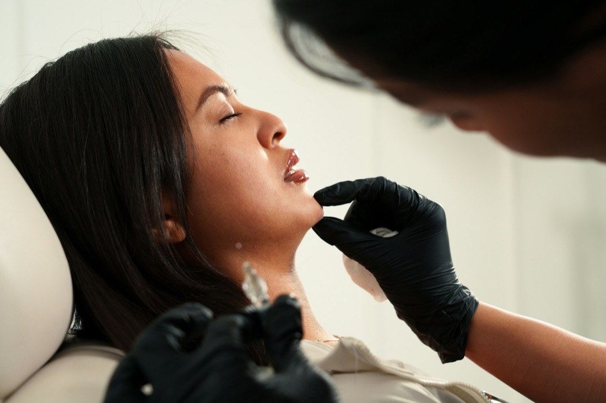
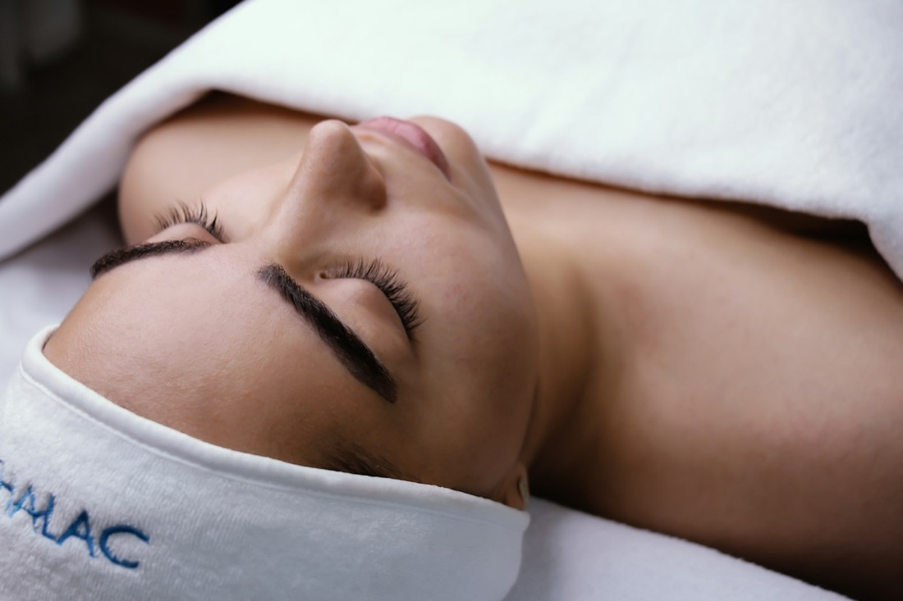

Hair transplant, hairline
A receded hairline rebuilt graft by graft for a natural front.
A skin and hair institute in Maninagar, Ahmedabad, led by two MD dermatologists. Acne, pigmentation, hair loss and FUE hair transplant, treated with evidence, not guesswork.
Everything from a first pimple to a full hair transplant, handled by the same two doctors, so your care stays joined up.
Pick a category and tap a concern to see how we treat it. Not sure? Message us a photo on WhatsApp and we will guide you.
Unretouched before and after photos from our own patients, shared with consent. Identities are protected.
A receded hairline rebuilt graft by graft for a natural front.


An advanced bald crown restored to natural density.


Pitted scars resurfaced over a few planned sessions.


Stubborn facial pigmentation lifted with medicine, peels and pigment lasers.


Thinning areas re-densified with growth factor therapy.


Inflamed acne cleared with oral and topical treatment plus peels.
Individual results vary. Photos used with patient consent.
See all 13 results →Every plan starts with a diagnosis. Here is where most of our patients begin.

FUE and DHI, natural and lifelong.
Diagnose the cause, then regrow.
Clear skin, smoother texture.

Even, luminous tone.
Hair reduction, tattoo, toning.
Firm, fresh, rested skin.

Renewal with little downtime.

Eczema, psoriasis, vitiligo, more.

Minor skin surgery, same day.
You are always seen by an MD dermatologist, never handed to a technician for diagnosis.

Dr. Sohini brings medical precision and an aesthetic eye to every plan. She leads the institute's skin programmes, from acne and pigmentation to anti-ageing, with care designed around Indian skin.
Book with Sohini →Trained at B.J. Medical College and VS Hospital, with a hair transplant fellowship under an American Board of Hair Restoration Surgery certified surgeon. He uses FUE instruments imported from the USA and Turkey for natural, dense, lifelong results.
Book with Malhar →No pressure, no package selling. A clear diagnosis and a plan you understand.

Book online in a minute or message us on WhatsApp. Photos help.
Your dermatologist examines your skin or scalp and finds the cause.
A written plan with sessions, timelines and what to expect at each step.
Progress photos at every visit, and a team a message away.
5.0
★★★★★Rated 5.0 from 101 reviews on Google. Read them in full, unfiltered.
Read reviews on Google ↗“Patients describe Dr. Malhar as deeply knowledgeable, explaining every option clearly before starting.”
Mentioned often in Google reviews“A clean, modern clinic. Hygiene and infrastructure come up again and again.”
Mentioned often in Google reviews“Personal treatment plans with clear improvement in skin and hair.”
Mentioned often in Google reviewsStill curious? Ask us anything on WhatsApp. A real person from the clinic replies.
Yes. Transplanted follicles come from the DHT resistant donor zone, so when the procedure is done correctly they keep growing for life.
It is done under local anaesthesia. You stay awake and comfortable, and can watch TV or rest. You feel mild discomfort only during the numbing injection, with some soreness for a day or two.
Most transplants finish in one day. Around 2000 grafts take 5 to 6 hours. 3000 to 4000 grafts take roughly 7 to 9 hours, decided after a scalp analysis.
Transplanted hair sheds in 2 to 6 weeks, which is normal. New growth starts around month 3, clear improvement shows by month 6, and the final result arrives at 9 to 12 months.
Adults above 23 with stable hair loss, a healthy donor area, good general health and realistic expectations. We usually advise against surgery before 23, since baldness may still be progressing.
Both use growth factors from your own blood. GFC is a more concentrated, refined preparation. Your doctor will suggest one based on your hair loss and goals.
Most scars can be improved a lot, often by 50 to 80 percent, though complete removal is rare. The right mix of treatments makes the biggest difference.
Melasma can be controlled very well, but it can return with sun or hormones. That is why maintenance and sunscreen matter.
Fourth floor of Sigma Esquire, right above Domino's. Easy to find, with parking nearby.
| Monday to Friday | 10 am to 1 pm, 5 to 8 pm |
| Saturday | 10 am to 1 pm |
| Sunday | Closed |
Book a consultation in under a minute, or message the clinic team on WhatsApp. We reply during clinic hours.